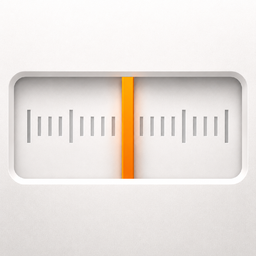
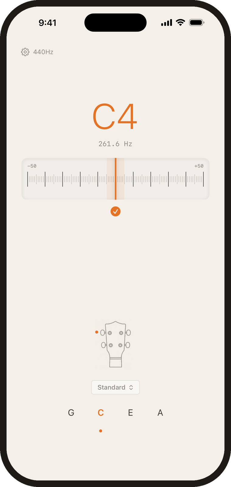
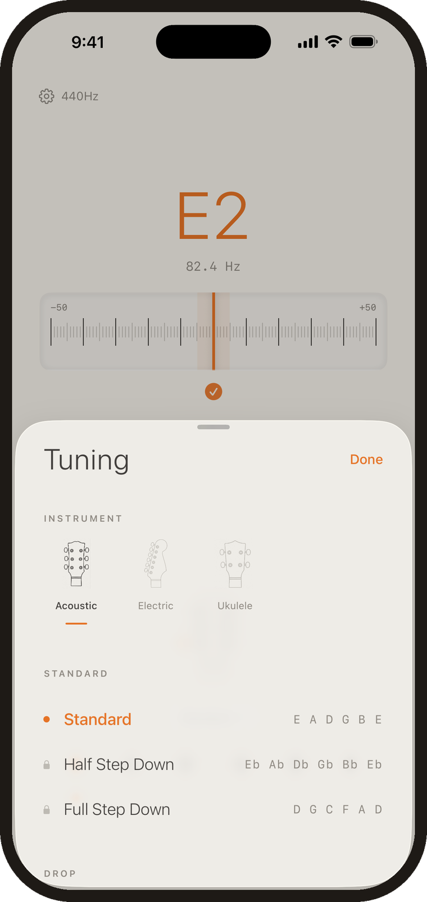

Dial: Guitar and Ukulele Tuner
In tune,
quickly.
Simply play a note, and Dial listens. No ads or distractions – just a simple, beautiful app.
Alternate tunings, one-time unlock

A tuner should do its job, and then get out of the way.
Dial was designed to be clear and simple — with no annoying logins, subscriptions, or unnecessary flash.

It hears the string
Automatic detection across the whole range. You play, it names the note and shows how far off you are.

Explore alternative tunings
Standard tuning is free for all instruments. A one-time purchase unlocks the full set of extras.
Or tap the note yourself
For noisy rooms and stubborn strings, pick the target by hand and tune against it.
Designed by musicians.
We built Dial because we were tired of tuners that try to capture your attention and distract you. A tuner shouldn't feel like a social media app – it should feel like a nicely designed, minimalist gadget.
Standard tuning is free, for as long as you like. Alternate tunings are a single purchase.